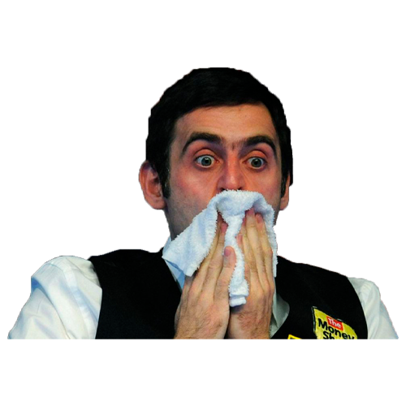
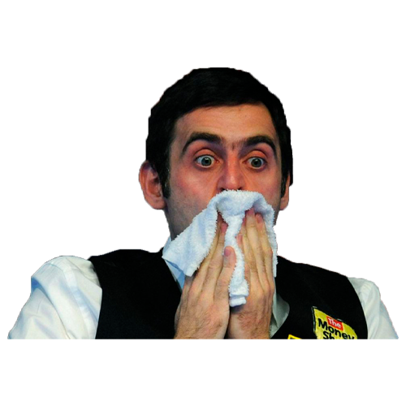

Добро пожаловать в игру-викторину о снукере!
Начнем? 🤩
Сколько раз Стив Дэвис выигрывал Чемпионат мира по снукеру?
Кто из игроков имеет прозвище "Шутник из Лестера"?
Кому впервые покорилась отметка в 1000 сотенных серий в карьере?
Какой крупный турнир проходит в легендарном Alexandra Palace?
В какой стране зародился снукер?
Сколько очков должен набрать игрок, чтобы получился максимальный брейк?
Какой игрок 6 раз играл в финалах Чемпионата мира, но так и ни разу не выиграл его?
Кто стал первым профессиональным игроком из Китая?
Российский голос снукера?
Игрок, доминировавший в снукере в 90-х годах?